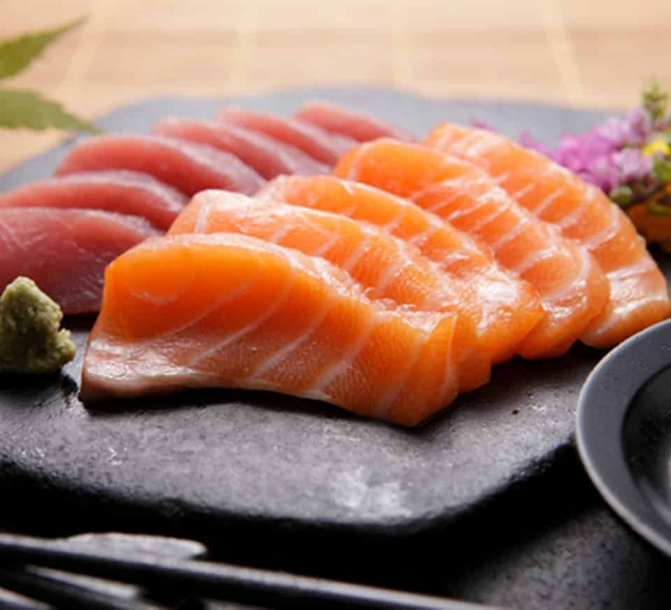

Sashimi

If you want to create the perfect table centerpiece, you can't go wrong with a decadent sashimi platter. Combining stunning, organic aesthetics with sumptuous, seared coriander tuna and salmon filet, Chef Devaux’s Sashimi Recipe is both a lesson in presentation, and a showcase of delicious sashimi... perfect for any occasion!
Ingredients
- 1 sushi grade tuna filet (cut into a rectangular block)
- 1 sushi grade salmon filet (cut into a rectangular block)
- Fresh coriander leaves (chopped and dried)
- Sesame seed oil
Preparations
- Place the tuna filet on the chopping board lengthways. Starting at the farthest end, begin making slices of approximately 0.5 cm to 1 cm in thickness. Make the slices slightly thicker if the filet is particularly tender, as this will prevent them from falling apart. For the cleanest possible cut, bring the heel of the knife down and through the tuna. Cut approximately six slices from the block, and set those aside.
- Drizzle the remaining ‘block’ of tuna with sesame seed oil, turning it over to ensure even coverage on all sides. Use your fingers to rub the oil into the tuna on the four longest sides.
- Sprinkle a generous helping of dried and chopped coriander leaves over the tuna filet covering the entire surface area. Repeat this step for all four oiled sides.
- Once the filet block is entirely covered, transfer it to a medium hot frying pan using the blade of your knife. Sear each side for no more than 10-15 seconds, until the fish is visibly white on the outside. Transfer the tuna block back to the chopping board, ensuring it sits on a raw edge to cool. This will allow the heat to escape the fish, without it cooking further.
- For Salmon; Position the salmon filet block in front of you at a 45-degree angle. Begin making cuts at a 90-degree angle to the fat lines, with the blade of your knife tilted also at 45 degrees. Slice through the fish in one single, fluid movement. Each slice should be approximately 0.5 cm in thickness.
- For Tuna; Place the seared tuna block vertically on the chopping board so that its length is parallel to your knife blade. Begin making fluid, single cuts of approximately 0.5 cm to 1 cm in thickness. You may need to adopt a slight, gentle sawing motion to separate each slice. Set aside whilst preparing the garnish.